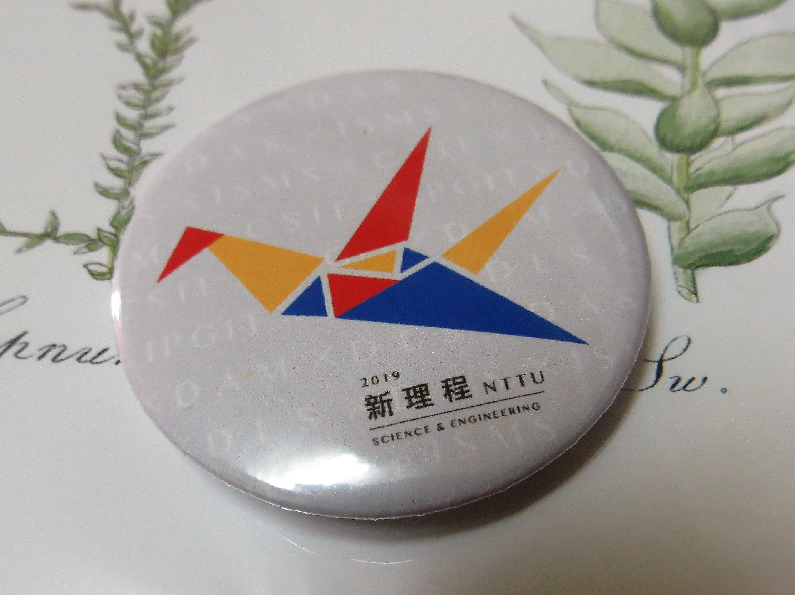

東大專題成果報告
中午12:25前用完午飯就匆忙地前往校門口集合，坐上遊覽車前往台東大學做最後一次的成果報告。偏偏我的組員請假去了臺南，這一次我只能自立自強。
回想當初我還沒進入甲班加入這一組應用數學組時，也是他一個人開始的，算是互相扯平了吧！但是我真心覺得我是最幸運的那一個人，有幸給高教授親自的指導，每個禮拜五早上8:30準時上課，11:45不準時下課。今天我就要替我的組員和我自己畫一個完美的句點，將各自的卡片親手交給教授。
在慌亂（洗碗想著報告的事而不自覺抓起罐頭洗因而割破了食指）和厄運（在下遊覽車走到避雨棚前滑倒跌了一屁股）干擾下，我相信我的不幸因此用光了！邊在心中細數等會兒的報告內容，邊和第十組熱心幫助我按投影片的同伴抒發緊張的情緒。
終於輪到最後的應用數學組，我們兩組直接一起上台。在第十組報告完後，緊接著我當壓軸結束這一切，當然我在報告過程中一直結巴，跟設想的完美不疾不徐狀態完全不一樣，拿著雷射筆時還一直手抖，甚至忘記放回去...帶著它一起進了我的包包......。不過結束之後，聽見教授叫我的名字，說我的報告很好！很少人會這樣不照著稿念的......。
之後要站在各自的海報前給別人發問，我跟教授和他的同事聊了一下、把我們的卡片交給他，那位請假組員的爸爸也來跟我說話，偷偷說我講得很好欸！過了一會兒，有兩位大學生站在我們的海報前談論，教授就開心地叫我趕快去偷聽，結果就被發現了！只得簡單介紹一下我們的專題並用笨拙的口才回答提問。
沒想到有一位是曾經讀過東女的學姐，就向我介紹了他們的研究。他們主要是研究硬體設備，有自動辨識農作物功能使灑農藥自動化的智能機器車、油膜厚度量測的套裝軟體、結合四軸飛行器與智能車之智慧救災系統。
最後去挑戰理工學院自己開發的遊戲！有人向我警告那個對手很難纏，沒想到我沒玩過遊戲的狂按左鍵，第一次就成功打敗了對手！讓那些大學生驚訝不已。還有另一個故事性的遊戲「尋找光」，也是他們自己做的，是第一人稱的遊戲，結果一個不小心就被大甲蟲吃掉了！雖然大甲蟲很兇會吃人，但是其實挺可愛的。在我玩遊戲時突然教授拿著我的東女袋子過來！我又冒失地犯了這種錯誤......。
之後去外面闖關，有生科、綠資、資管、資工、應數、應科，成功闖關完得到的獎品就是胸章！雖然我先前就知道了。就跟學長姐說的一樣，東大雖然就在台東這種偏鄉很少有人會想來讀，但是就是因為學生少使師生的關係更加密切，和其他內部的科系合作也變得更加容易。
經過這次的活動和長達一個學期的專題課中，不但考驗了自己的口才、學習如何寫報告、甚至習得資料分析與寫網頁的能力，徹底了解教授之前說過的話：「最重要的不是名次，而是你學到了什麼？」今後我也將隨身攜帶著這一句勵志話，去學習的更多、走得的更遠。
